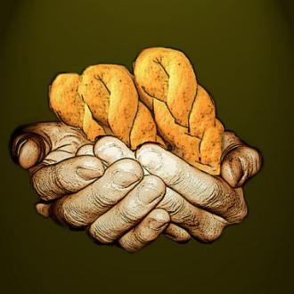

Perry S. Nicholas
Baking Greek Cookies

My mother rolled the koulourakia softly,
between the rough palms of her hands,
kneading her two distinct lives.
Pushing gently, she formed her small island,
then pressed more firmly as she worked
her second life into shapes of larger States.
Even when she was a girl, so poor
she made up games with a stick, a can,
and a crippled cousin, she dreamed split worlds.
Things would be better over there —
it was America, for God’s sake —
and love along with fortune could be
discovered, or at least easily learned.
My mother baked the koulourakia slowly,
watched her dreams rise into one sweet twist.
Shadow
— Sonnenizio based on a first line by James Wright
When I went out to kill myself, I caught
my shadow in the hall mirror, outlined,
frozen, like an animal who recognizes its killer
and can’t decide when to make the first move.
Then I combed the yard, the garage, the pond
behind the house, killing time until I could
determine which method to use, which out
I should take to avoid being caught, rescued.
When I tried to hang myself, I couldn’t tie.
When I arched to asphyxiate myself, I breathed.
When I dove in to drown myself, I was afraid
and swam, caught between weakness and desire.
Last night, when I went out back to erase myself,
I caught my shadow, allowed the killer to pass.
Wine
Don’t cry. Don’t cry... the wine of love — the wine of love intoxicated my soul.
— Nikos Kazantzakis
Ripping through the cobblestoned streets, they tore
through each other’s words, past the sleeping heart
of the island, tossing off the leftover wine of excuses.
They wished someone might wave them in
for Turkish coffee or sweet mastica to coat
their distasteful quarrels, their tart make-ups.
Grabbing her hand behind the old church, he held it
to him as they watched the baptismal ceremony. Drinking
from a sheepskin, sour Retsina dripping down their necks,
she sobbed while he bleated the word Signomi,
I’m sorry, pressed his hardness against her belly,
against the space he had occupied the night before.
Perry S. Nicholas is an English professor at Erie Community College North in Buffalo, N.Y. He has been nominated twice for a Pushcart Award, and currently has two chapbooks in print. His poems “Santorini” and “Patrimony” appear in Feile-Festa, and his sonnet “March Sonnet” is currently online at http://www.notjustair.org.
|